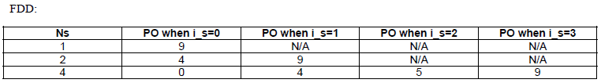

|
Paging Home : www.sharetechnote.com |
||||||||||||||||||||||||||||||||||||
|
Paging is the mechanism in which Network tells UE saying "I have something for you". Then UE decode the content (Paging Cause) of the Paging message and UE has to initiate the appropriate the procedure.
In most cases, this paging process happens while UE is in idle mode. This means that UE has to monitor whether the networking is sending any paging message to it and it has to spend some energy(battery) to run this "Monitoring" process.
If I have to run this "Monitoring" process continously even in the idle mode, isn't it too much waste of engergy ?Yes, it is.
Is there any way to prevent this kind of energy waste ? There would be no way to prevent this envergy consumption completely (if you can come out with any idea to prevent this completely, you don't need to read this any more.. just do early retire and enjoy your life whereever you want to go with huge money coming out of your patent -:), but there would be some way to reduce the consumption in great degree.What is it ? There may be many different way to do this.. but most common method (probably easiest to realize) is to make some 'contract' between UE and Network.What kind of contract it would be like ? It is like "Hey.. Mr. Net.. don't send the paging method continuously.. just transmit it in a kind of burst mode with a certain interval. I will go sleep when you are not transmitting Paging and I will just wake up exactly at the time you are transmitting the paging message".This way UE can save the battery while it is in sleep and can get the paging message as well. It means that UE is recieving some data from the network "discontinously". This kind of reception mechanism is called DRX (Discontinous Reception).Here we have an important question. How can UE knows the exact timing when the Network send the paging ? The simplest solution for this would be to make another contract about "Paging transmission timing". you see the logic ?
i) During the idle mode, UE gets into and stay in sleeping mode defined in DRX cycle (Discontinous Receive Cycle). (This DRX is cycle is defined in SIB2) ii) UE periodically wake up and monitor PDCCH in order to check for the presence of a paging message(UE looks for any information encrypted by P-RNTI) iii) If the PDCCH indicates that a paging message is transmitted in the subframe, then UE needs to demodulate the PCH to see if the paging message is directed to it.
Note : Paging messages are sent by a MME to all eNodeBs in a Tracking Area and those eNodeBs in a Tracking Area is transmitting the same paging message. Note : Each eNodeB can contain cells belonging to different tracking areas but each cell can only belong to one Tracking Area.
BCCH-DL-SCH-Message ::= SEQUENCE +-message ::= CHOICE [c1] +-c1 ::= CHOICE [systemInformation] +-systemInformation ::= SEQUENCE +-criticalExtensions ::= CHOICE [systemInformation-r8] +-systemInformation-r8 ::= SEQUENCE [0] +-sib-TypeAndInfo ::= SEQUENCE OF SIZE(1..maxSIB[32]) [1] | +- ::= CHOICE [sib2] | +-sib2 ::= SEQUENCE [00] ...... | | +-pcch-Config ::= SEQUENCE | | | +-defaultPagingCycle ::= ENUMERATED [rf128] | | | +-nB ::= ENUMERATED [oneT]
Now it's time to get into the official specification.
Pasing Occasion and Paging Frame
There are two most important terminologies which is PF(Paging Frame) and PO(Paging Occasion). 3GPP 36.304 - [7 Paging] explain this two terms as follows :
* Paging Occasion (PO) is a subframe where there may be P-RNTI transmitted on PDCCH addressing the paging message. * Paging Frame (PF) is one Radio Frame, which may contain one or multiple Paging Occasion(s).
As you know, LTE has two timing units as many of other technology. Timing Unit in Frame scale (SFN : System Frame Number) is one unit and the timing unit in subframe level (Subframe Number). It means that you have to know both SFN and Subframe Number to locate exact position in LTE time domain. Regarding the paging cycle, PF(Paging Frame) + PO(Paging Occasion) let you know the exact timing when UE has to wake up to catch the paging message being sent to it.
Let's tackle the PF first.
PF = SFN mod T = (T div N) x (UE_ID mod N)
Then where does T come from ? According to 36.304, T is defined as follows :
T is DRX cycle of the UE. T is determined by the shortest of the UE specific DRX value, if allocated by upperlayers, and a default DRX value broadcast in system information . If UE specific DRX is not configured by upperlayers, the default value is applied.
It means UE can get the T from two different source, one from the system information (SIB2, IE defaultPagingCycle) and the one from upper layer. Then which value does UE has to use ? It depends on the situation. If upper layer send the value, it use the value from the uppder layer, otherwise UE has to use the value from SIB2.
Then let's think about where does other values come from. These values are defined as follows in the specification.
N = min(T, nB), which means the smaller one among T and nB. nB can be any one of 4T, 2T, T, T/2, T/4, T/8, T/16, T/32, which comes from SIB2 (IE nB).
UE_ID = IMSI mod 1024, where IMSI should be used in Decimal format and is stored in USIM.
By this, we got PF now. Then what is the next step ? We have to get PO (Paging Occasion).
36.304 defines PO as follows :

As you see the table, i) When Ns = 1, there can be only one paging occation (only one subframe where paging message is carried) within a Paging Frame and the subframe number is 9. ii) When Ns = 2, there can be two paging occations (two subframes where paging message is carried) within a Paging Frame and the subframe number is 4 and 9. iii) When Ns = 4, there can be four paging occations (four subframes where paging message is carried) within a Paging Frame and the subframe number is 0,4,5 and 9.
From the table, we can figure out PO if we get i_s. Then how to get i_s ?
We already explained how to get N. We only have to know Ns now. 36.104 defines Ns as follows:
Ns = max(1, nB/T), which means that Ns is the larger value between 1 and NB/T.
If you see the ue-identity field (IE) of Paging message, you will see there are two choices, s-TMSI and IMSI. Which type of UE ID is commonly used. The answer is s-TMSI. If everything is normal, Network send Paging with s-TMSI, but if something (e.g, Network Failure) happens during registration and it fails to allocate TMSI to the UE, NW would send Paging with IMSI.
If UE get the paging with IMSI, it should tear down all the existing Bearer and delete TAI, TAI List, KSIASMI and get into EMM-DEREGISTERED status. And then redo 'Attach Request'.
TTCN for Paging Cycle Calculation
Even though I tried to explain clearly, exact paging cycle calcuation is pretty confusing procedures. If you are interested in exact steps of Paging Cycle Calculation, I would recommend you to refer to TTCN source code from ETSI.
Refer to following two functions in EUTRA_Paging.ttcn i) function f_EUTRA_GetPagingCycleValue ( DefaultPagingCycle_Type p_PagingCycle) ii) function f_EUTRA_Calculate_PF_PO ( SystemFrameNumber_Type p_Sfn, DefaultPagingCycle_Type p_T, PCCH_Config.nB p_Nb, hexstring p_Imsi, EUTRA_FDD_TDD_Mode_Type p_Fdd_Tdd )
Refer to Where can I get TTCN and Viewer ? if you want to get TTCN source code and TTCN Viewer.
Example 1 > - Paging with s-TMSI
PCCH-Message ::= SEQUENCE +-message ::= CHOICE [c1] +-c1 ::= CHOICE [paging] +-paging ::= SEQUENCE [1000] +-pagingRecordList ::= SEQUENCE OF SIZE(1..maxPageRec[16]) [1] OPTIONAL:Exist | +-PagingRecord ::= SEQUENCE | +-ue-Identity ::= CHOICE [s-TMSI] | | +-s-TMSI ::= SEQUENCE | | +-mmec ::= BIT STRING SIZE(8) [00000001] | | +-m-TMSI ::= BIT STRING SIZE(32) [00000000000000000000000000000001] | +-cn-Domain ::= ENUMERATED [ps] +-systemInfoModification ::= ENUMERATED OPTIONAL:Omit +-etws-Indication ::= ENUMERATED OPTIONAL:Omit +-nonCriticalExtension ::= SEQUENCE OPTIONAL:Omit
Example 2 > - Paging with IMSI
PCCH-Message ::= SEQUENCE +-message ::= CHOICE [c1] +-c1 ::= CHOICE [paging] +-paging ::= SEQUENCE [1000] +-pagingRecordList ::= SEQUENCE OF SIZE(1..maxPageRec[16]) [1] OPTIONAL:Exist | +-PagingRecord ::= SEQUENCE | +-ue-Identity ::= CHOICE [imsi] | | +-imsi ::= SEQUENCE OF SIZE(6..21) [15] | | +-IMSI-Digit ::= INTEGER (0..9) [0] | | +-IMSI-Digit ::= INTEGER (0..9) [0] | | +-IMSI-Digit ::= INTEGER (0..9) [1] | | +-IMSI-Digit ::= INTEGER (0..9) [0] | | +-IMSI-Digit ::= INTEGER (0..9) [1] | | +-IMSI-Digit ::= INTEGER (0..9) [0] | | +-IMSI-Digit ::= INTEGER (0..9) [1] | | +-IMSI-Digit ::= INTEGER (0..9) [2] | | +-IMSI-Digit ::= INTEGER (0..9) [3] | | +-IMSI-Digit ::= INTEGER (0..9) [4] | | +-IMSI-Digit ::= INTEGER (0..9) [5] | | +-IMSI-Digit ::= INTEGER (0..9) [6] | | +-IMSI-Digit ::= INTEGER (0..9) [7] | | +-IMSI-Digit ::= INTEGER (0..9) [8] | | +-IMSI-Digit ::= INTEGER (0..9) [9] | +-cn-Domain ::= ENUMERATED [ps] +-systemInfoModification ::= ENUMERATED OPTIONAL:Omit +-etws-Indication ::= ENUMERATED OPTIONAL:Omit +-nonCriticalExtension ::= SEQUENCE OPTIONAL:Omit
Example 3 > - Paging for ETWS
PCCH-Message ::= SEQUENCE +-message ::= CHOICE [c1] +-c1 ::= CHOICE [paging] +-paging ::= SEQUENCE [0110] +-pagingRecordList ::= SEQUENCE OF OPTIONAL:Omit +-systemInfoModification ::= ENUMERATED [true] OPTIONAL:Exist +-etws-Indication ::= ENUMERATED [true] OPTIONAL:Exist +-nonCriticalExtension ::= SEQUENCE OPTIONAL:Omit
Example 4 > - Paging for system Info Modification
RRC_LTE:PCCH-Message PCCH-Message ::= SEQUENCE +-message ::= CHOICE [c1] +-c1 ::= CHOICE [paging] +-paging ::= SEQUENCE [0100] +-pagingRecordList ::= SEQUENCE OF OPTIONAL:Omit +-systemInfoModification ::= ENUMERATED [true] OPTIONAL:Exist +-etws-Indication ::= ENUMERATED OPTIONAL:Omit +-nonCriticalExtension ::= SEQUENCE OPTIONAL:Omit
|